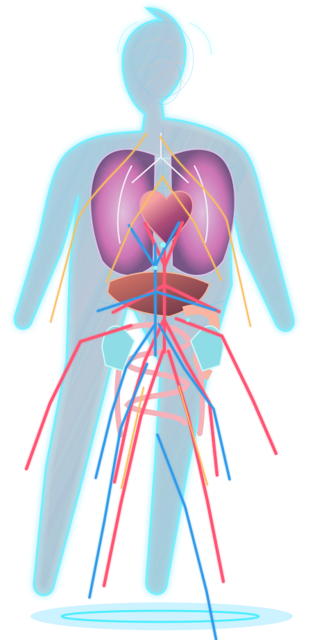
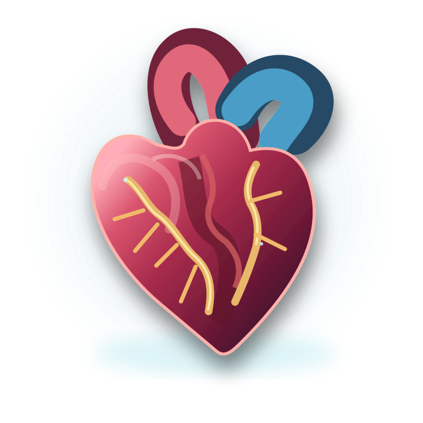

SIMULATION / 01سيناريو افتراضي
تحديات تعليمية مبسطة غير مراجعة للتقييم المهني؛ لا تعتمد عليها في الممارسة الطبية.


ثماني رسومات طبية مجسّمة عالية الوضوح بصيغة متجهات قابلة للتكبير دون تشوّه. اختر العضو، استكشف أجزائه الأساسية، وافتح درسًا تفاعليًا أو مختبرًا مرتبطًا به. هذه رسوم تعليمية بأسلوب ثلاثي الأبعاد، وليست نماذج حجمية قابلة للدوران أو صور تشريح معتمدة.
مخططات فنية توضيحية مع تظليل مجسّم. للتعلّم فقط، وليست مرجعًا تشريحيًا تشخيصيًا.
اختر نظامًا وتدرّج عبر البنية والوظيفة والترابط. عند الانتهاء، اختبر فهمك بسؤال قصير.
CARDIOVASCULAR
اختر جهازًا وشاهد الروابط الأساسية بينه وبين الأجهزة الأخرى. استخدم الروابط للعودة إلى الدرس.
ثلاثة سيناريوهات خيالية قصيرة لفهم المفاهيم، لا لتشخيص or treating patients.
تحديات تعليمية مبسطة غير مراجعة للتقييم المهني؛ لا تعتمد عليها في الممارسة الطبية.
تابع عدد الأجهزة التي اختبرتها والتحديات التي أكملتها. هذه الإحصاءات تخص تجربة V11 فقط؛ لا تُضاف تلقائيًا إلى سجل الطالب الرسمي.
اختياري. دون اسم أو حساب أو إرسال معلومات. يمكنك حذف البيانات في أي وقت.
التقدم يعكس التفاعل والتعلّم الذاتي، وليس كفاءة طبية أو شهادة.
طوّرت تجربة Human Universe لتكون بوابة تفاعلية إضافية داخل أكاديمية نبض للعلوم الطبية، تكمل مسارات نبض وأطلس والمختبر البحثي.